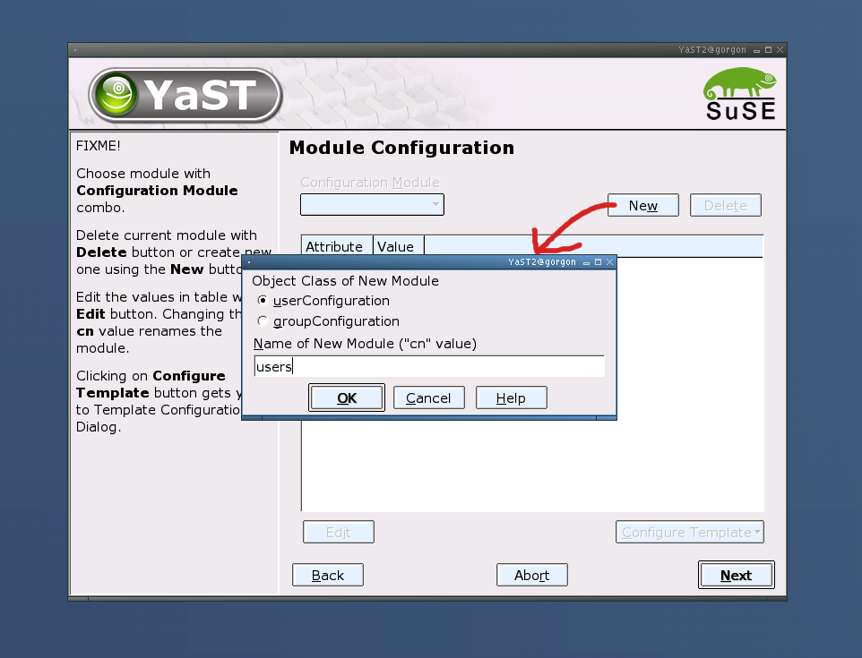
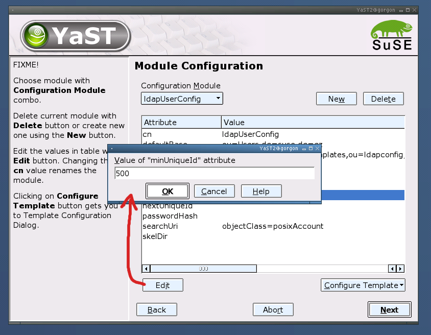
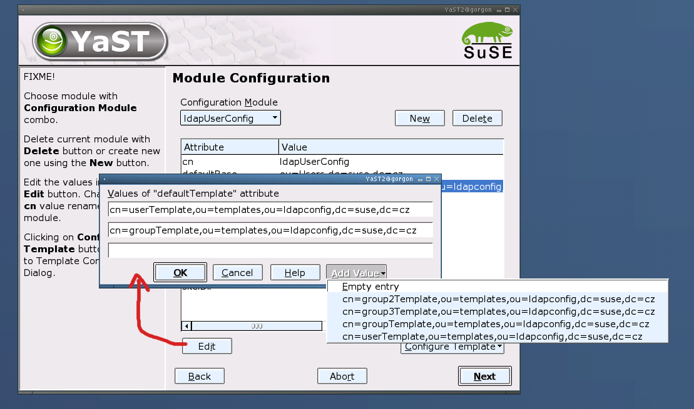
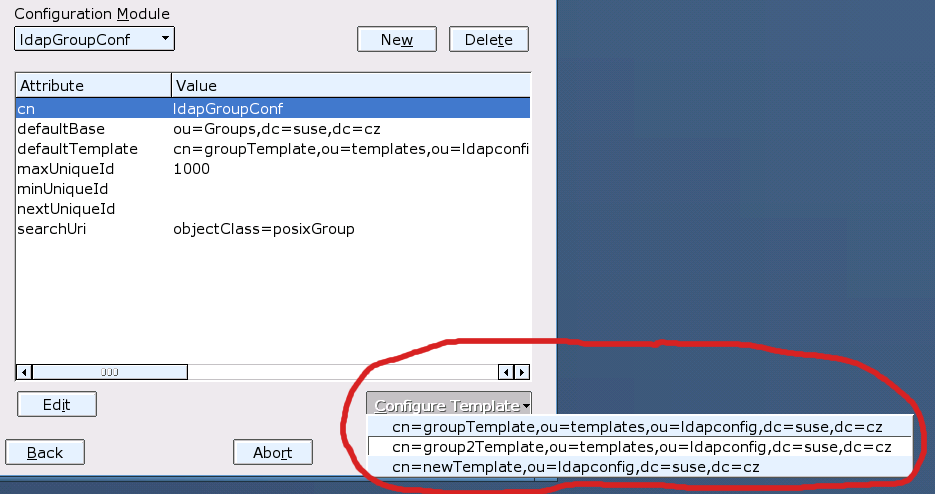
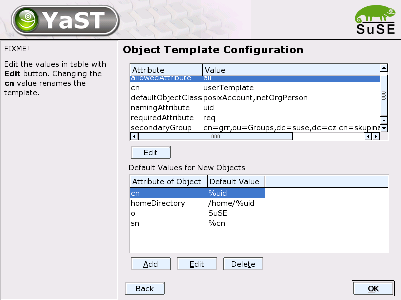
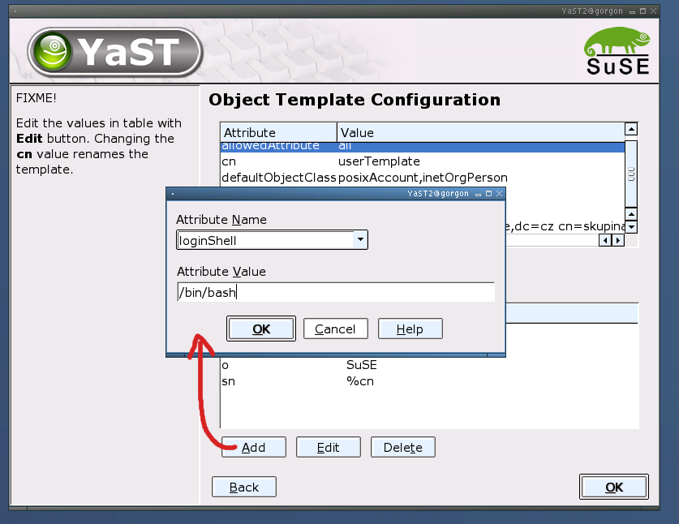

SL 8.2 (and even more later versions) should operate with LDAP much more than
it used to be. Documentation to all the large area called "LDAP enablement"
could be found at
http://w3.suse.de/~rhafer/LDAP
and in yast2/planning CVS directory.
These changes include (from YaST side)
According to Ralf's proposal, we must add some dialogs to configure various "modules" (e.g. user configuration). All the data should be stored in LDAP, in the local file (ldap.conf) there will be one new value (Main Configuration Object) which is the base DN for searching all other configuration data. Here is the dialog proposal.
This should remain simple is to enable fast configuration if user don't need much (or just for enabling/disabling the services).

Dialog for configuring the access to LDAP server (main configuration DN - the place for configuration objects - and bind DN) and various other settings (file server - the flag used by users module to check if manipulation with homes is possible).

Configure button leads to configuration of objects, stored at LDAP server , so the password popup is displayed before Modules Configuration Dialog:

For configuration of specialized "config modules" (currently users and groups
configuration).
ComboButton allows to change currently configured module.
The table contains all attributes allowed for the module (including the
empty - not set - ones). Some of them are common for each module (like
defaultBase or cn) and some are module-specific (like skelDir for users).

User can create new configuration module (but only one for each type at one level of LDAP tree). This popup is opened for creation:

For changing the values in table, "change value popup" is used. It is differed, when only single value could be entered:

... and when the list of values could be used. In this case, list of propose values could be provided (if available):

From Modules Configuration Dialog we can move to Template Configuration Dialog by using MenuButton at the bottom, which shows the list of templates available for editing (the list entries are the values of "defaultTemplate" attribute):

Configuration of template values. There is one table with general template attributes (they cannot be deleted, only ignored) and one table for setting the defaultValue attribute. In default values, some kind of regular expressions is allowed.

When user wants to add new "default Value", AddDefaultValue Popup is opened. It offers the list of attibutes which could have new object according to the "defaultObjectClass" attribute of template (in the example, "loginShell" is derived from "posixAccount" value in "defaultObjectClass" attribute):
